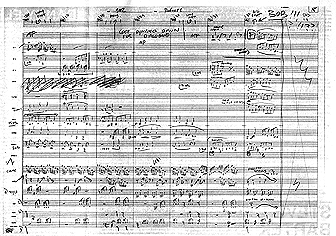
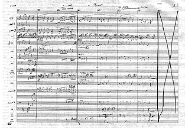

Article by Lukas
Kendall; Part 2 of 2
Film Score Monthly #64, December 1995
You can order this issue, and part 1 (issue 62) by sending $3 for each issue to:
Lukas Kendall Film Score Monthly Box 1554, Amherst College Amherst MA 01002-5000
Subscriptions are $11 for 6 months and $22 for a year (10 issues a year).
After Batman, Danny Elfman did a number of action films (Darkman, Dick Tracy, Nightbreed), but it wasn't a dislike of the genre which forced him to call it quits after Batman Returns in 1992. "Personally I love doing those big action films. I had a great time writing the score to Darkman. It was a big, old-fashioned melodrama, and I love big, old melodramatic scores." Instead, it was the interminable sound effects of the genre that turned him off. "It was during the screening of Batman Returns that I decided I want to write music that will do what it was meant to do for a film; I don't want to write music that will compete with an opera of sound effects. Contemporary dubs to my ears are getting busier and more shrill every year. The dubbers actually think they're doing a great job for the music if a crescendo or horn blast occasionally pops through the wall of sound."
The situation on Batman Returns was his worst ever. Elfman wrote his music with dynamics in mind, only to find that everything was flattened out by the dubbing mixer. The film was so poorly dubbed that Elfman believes his music actually hurt the picture; had he known how the sound effects would have been used, he would have simplified his writing. "In the end result, I believe that if 25% of the score and 25% of the sound effects had been dropped, the entire soundtrack would have been infinitely more effective than the busy mess it became." Many composers will argue that a good relationship with a director will help get their score across in the final mix, but unfortunately most directors "don't have good ears, even the brilliant ones. With Tim Burton, I had my best and worst dubs back to back. I've never had a better dub than on Edward Scissorhands, and I've never had a worse dub than on Batman Returns. No director does this consciously, they just lack the audio skills to deal with such a complex science."
As an example of good dubbing, as practiced in the past, Elfman mentions Lawrence of Arabia, where the first several minutes of a huge battle scene are played solely with sound effects, and at a specific cut, the music takes over completely. "The music raises the emotional level enormously, and you're not aware that all the sound effects have stopped, your brain thinks they're continuing. That to me is perfect dubbing." Another example EIfman gives, enthusiasm bubbling, is Hitchcock's sparse use of sound effects. "Hitchcock was wonderful at giving a heightened reality to a scene by being very selective with the sound. We would rarely hear sound effects for action that we did not specifically see, and he would let the music fill in all the holes in our imaginations. It let us imagine these things are there all the time, but we're not hearing everything all the time, and you don't think anything is wrong."
Today, however, "sound people tend to look at each individual moment. They look at five seconds, and if something's missing for a fraction of a second, there tends to be a panic. They don't look at the context over the entire soundtrack and the entire film. Hitchcock's films, if dubbed today might become a whole different animal as the soundtrack would get filled from top to bottom, leaving no room to breathe, and certainly no room for Bernard Herrmann's marvelous scores. There is a point at which all of this starts to wear down on the audience's ears." EIfman compares the experience of dubbing a film to mixing an album - in each case, you tend to scrutinize it moment to moment, looking at every single instant, and if there are major flaws your ear tends to grow accustomed to them just by the repetition. Even if it's wrong, it will start sounding right. However, a major difference is that when you mix an album, you can "A-B" it with another recording just by popping in a different CD and re-aligning your ears. "You might pop in another album for comparison and realize, 'Oh my god, there's no bass!' But it's only by listening to something else that you realize that you almost completely lost your bass, because your ears will compensate for it and make you think you've been hearing it all this time. That's a luxury we have when we're mixing, you can pop in something else at any time and re-adjust your ears to see if you've slipped, but you can't do that on the dubbing stage of a film. You can't just turn on another film and go, 'Beep beep, A-B, whoa! Why does that other movie sound twice as good as ours? Maybe we're doing something wrong here.'"
Elfman isn't critical of any particular sound designer, as much as the entire freight-train dubbing mentality. "They're simply doing their jobs, which is to provide every possible sound. It's the mixer's job to select sounds and ask, 'Do we need to hear everything that you see and don't see all the time?' What contemporary dubbing is doing is taking all our imagination away from us."
Nevertheless, film remains a medium obsessed with creating an audio-visual "virtual reality," a type of sensory overload, to the expense of the story and characters, even though those are what people are going to see. "An audience very seldom realizes when they're hearing a terrible score, any more than they realize when they're watching terrible editing. If they could magically see a scene edited much better, they would notice the difference, and likewise, if they could suddenly, magically see the same scene with a very effective score, they would find themselves unconsciously more involved."
Nothing has been as pervasive or damaging to Elfman's reputation as the constant belief and insistence by others that he doesn't write his own music. Never mind the similarity of style from score to score, the fact that he has continued to write large-scale scores without using Shirley Walker to conduct, who people at one point assumed really wrote Batman; that the scores his Iead orchestrator, Steve Bartek, have done on his own have been completely different from Elfman's music; and the sheer illogic to the assumption that Elfman could have a hidden army of ghost-writers somewhere without anyone naming names or coming forward. Yes, it is true he came up with the theme to Batman while on an airplane, then went into the john and hummed it into a tape recorder. Many composers and songwriters have been known to carry around tape recorders and hum out a melody when it comes to them; some turn over the tape to an orchestrator to flesh out, many write it themselves. Elfman took his tape of him humming the Batman theme, brought it home and wrote it out himself at a piano with pencil and paper.
"I use orchestrators, not arrangers. The difference may seem subtle. but it's not," he explains. "The orchestrator's job is to take music which has been clearly written and balance it for the size orchestra that has been designated. Steve Bartek has been my primary orchestrator on almost every film I've done. He never changes a melody, he doesn't add counterpoint, he does not change or add harmonies. That's the composer's job. He will elect what instrumentation might best express what I'm trying to convey in terms of doubling melodies and dividing the parts of the string section so they can be used most effectively. I don't want to minimize this job, it's very important. It's time-consuming and I, Iike most composers, depend on our orchestrator to complete the final stage of the scoring. John Williams uses orchestrators and he certainly doesn't need to. Prokofiev used orchestrators, though he certainly didn't need to. I use orchestrators for the same reason." To give specific examples, if Elfman wrote three parts for strings, Bartek will decide which individual players will play which note to best balance the orchestra. He might also write out more orchestral parts than are eventually used; for example, the oboe music might include lines from the flute part, so that even though the oboist is not expected to play, his music will include the flute lines in case it is deemed necessary for him or her to "double" (also play) it. It's simply easier to have it all written in advance than to have to rush and have the copyist scribble out new parts on the stage. "We may have the first pass of a cue over-orchestrated, and then have to tacit parts, but better that than under-orchestrated," he explains.
The orchestrator is helpful before the recording, as well as during it. "I have a tendency to overwrite, as you're well aware, and Steve is very helpful in finding train-wrecks before we get to the scoring stage. When I'm moving very fast, he'll be able to help me, like 'tell me where I fucked up by laying it on too dense.' Sometimes Steve will call me up, he'll say, 'Your melody is down there in this very loud section, I think you've got to make a decision between what the trombones are playing or where the melody is.'"
In two rare cases. Elfman has delegated a cue of a score to an outside composer, just to finish on time, Jonathan Sheffer wrote the helicopter music in Darkman (see sidebar p. 16), and Shirley Walker did one of the climactic action cues in Nightbreed. These resulted from Elfman knowing he could write 63 minutes of a 70 minute score in the time allotted, for example and delegating the other 7, often for particularly noisy, sound-effects laden cues he didn't want to deal with, to the outside musician. "The few times that I've asked orchestrators to do an arrangement and take a melody I've written and turn it into an original piece of score, I've always given them composing credit," he states. (For proof, see the end credits of the respective films.) "That same philosophy applied in many films today would leave very long and embarrassing end credits."
Elfman's first film was the aforementioned Pee-Wee's Big Adventure, and he briefly toiled with the idea of doing it the usual "rock and roll method," i.e. playing themes and having an orchestrator take it from there. But he realized. "to really get your voice sounding original, you need to do more than that. I started doing that for two weeks on Pee-Wee, and realized, this isn't going to work. I forced myself to start writing the stuff out." He got by on Pee-Wee by the fact that "it was a very simple score", same for Back to School. "I got up to Beetlejuice and over the course of ten scores got to the point where I could handle more complicated music and I had to push myself to do Batman. Once I got to Batman I had the confidence to hold much denser pieces in my head, because in order to write I have to mentally freeze the entire piece of music and write it down one part at a time. Same thing leading into Dolores Claiborne, I couldn't have done that at the time I did Batman, because at that point I couldn't really do dissonance, I had a hard time holding onto chords with odd voicings and movements, and moving things around in a non-rhythmic way. The key scores for me were Pee-Wee to Beetlejuice to Batman to Dolores, those were the big jumps, for me at least I'm not saying they were great leaps for music-kind."
"It's always amazed me how far and widespread the rumor that I hire other people to write my music has gone," Elfman states. "It's most interesting to me that Steve Bartek, who has orchestrated 95% of my music, never seems to be the one given that credit, which usually gets bestowed on conductors and secondary orchestrators, for reasons which I can't fathom. I've only heard a thousand times that Shirley Walker 'really' wrote the score to Batman, that Bill Ross 'really' wrote the score to Beetlejuice, that Mark McKenzie 'really' wrote the score to The Nightmare Before Christmas - the list goes on and on, and it's very boring."

However, he does he write his own music, and now, what started out as a challenge from a member of this otherwise unnamed group - "I'll believe it when I see it" - is a reality. See above a page of Elfman s sketch for Batman Returns (9M2, "The Rooftop"), and on the next page over, Black Beauty (1M1, "Birth"), each in his own hand. If people still believe this is a fabrication, then there's nothing anybody can do.

Elfman's initial response to a request to print his sketches was an emphatic "No way!" and one just has to look at his work to see why he might be defensive. "I'm embarrassed for good musicians to see my written music. My writing is self-taught, and as is with any illiterates learning to write, they often teach themselves in peculiar ways. My uses of sharps or flats often have a random quality as to my ear A-sharp and B-flat have no difference. To a trained musician, of course, they are different, in how they're read. Often I catch myself writing in sharps and realize I should be in flats and switch half-way through a phrase, creating some very confusing looking notation, particularly when changing keys. In that sense, I'm certainly an orchestrator's biggest nightmare. Also, I'm most comfortable writing in treble clef, even if it means using 15 or 31vb [one or two octaves lower than written] next to the phrase because this requires the least amount of concentration while I'm writing. When I feel alert, I write in bass clef, it just depends on the time of day. My writing is very much like an illiterate person who taught themselves the alphabet and how to type while writing a novel. They may be able to accurately tell their story, but it will be filled with misspellings and grammatical errors. Because of this, they, like myself find the viewing of their original manuscripts to be embarrassing. I can't make up for a dozen years of training that I never had, but musically speaking, I am able to say exactly what I wish to say, though often in awkward ways."
So basically, Elfman is a bad speller. However unlike a self-taught novelist who can use a spell-checker on a computer, there's no spell-checker for writing music with pencil and paper. "Those misspellings stay forever in my music," he says.
Ironically, Elfman's latest two projects are similar in that they are not fully written out and orchestral, but exploit the medium of recording in order to layer different samples, most of which he performed himself. Dead Presidents is the second film by The Hughes Brothers; their first was Menace II Society, for which they did not use a composer. The film is about a young black man and his experiences from 1968 to 1975 through inner city life, Vietnam and then a bank heist towards the end of the picture. (The title refers to money, which has Washington, Lincoln Jackson, and other "dead presidents" on it.) Most of the soundtrack is made up of classic '60s and '70s funk; Elfman's score plays a major role in the main title, Vietnam scenes and climactic heist. Co-director Allen Hughes was very generous of Elfman's contribution in a recent Hollywood Reporter, noting, "On Presidents, we worked with a composer for the first time; Danny Elfman. He does some things he's never done before, a really interesting mix of percussion, industrial sound and orchestra. We worked closely with him but mainly just told him what we didn't like. He taught us what music can do for a scene in terms of the score; he made some scenes ten times more dramatic. We hadn't experienced that on Menace II Society. He showed us how powerful it can be."
Of the film, Elfman offers. "It's a percussion based score, sampled percussion, of which I prelaid every cue, so that half of the score is my own performance. Then we laid orchestra on top of it. It's actually a way of working that I don't like to do as a rule because it's so much more labor-intensive. It means I have to pre-record every single cue before we go to orchestra. But it's what that particular score required, they [The Hughes Brothers] wanted a percussion-based score." EIfman's main title is his only cut on the Dead Presidents album, but the composer hopes to include several more Dead Presidents cues on a second Music for a Darkened Theater compilation from MCA, planned for some time in the next year or so.
EIfman's other score in a recent movie is To Die For, Gus Van Sant's black comedy starring Nicole Kidman as a fame-obsessed, would-be television personality. "To Die For has a lot of synthesizers in it, but is more orchestral than Dead Presidents. It's kind of hard to explain." (See review last issue.) Both films feature this sampling and orchestra technique, particularly in their main titles, so as to achieve instrumental combinations one could never get in "real life" - i.e. a Church organ, then an orchestra, then thrashing electric guitars, all over a percussion track and odd sounds, play in the same piece. The music draws in the audience, pulling off the crucial opening minutes of a movie when it is imperative that people shut up and get absorbed.
Elfman was absent, however, from a certain big-budget movie earlier this year, Batman Forever. The reason is very simple: "they didn't ask me," he says. He wasn't too disappointed initially, having heard that the filmmakers wanted to go in a different direction; however, then he saw the film, and was surprised to find much of Elliot Goldenthal's score similar to his own Bat-music in sound and style. Elfman also knows what the first Oscar-nominated score of the year will be, because he walked out of the movie due to the music, and "whenever that happens, I know it will be Oscar nominated." (What that is, however, he isn't telling.)
And thus we get the impression of the Good Danny and the Evil Danny. There is the Danny who is an all-nighter workaholic to do the best he can on his own scores, and the Danny who thinks it all sucks the Danny who speaks of the things he loves and admires, and the Danny who also speaks out against the industry. There's the Danny who is proud of what he has been able to accomplish, and the Danny who rolls his eyes in disbelief (and also pity that people would waste their time in such a manner), when told of a "rec.music.artists.danny-elfman" newsgroup recently started on the Internet. But that's all pretentious - this isn't a transporter accident, it's just one guy, a film music fan, unquestionably talented, who has paid his dues in hard work.
"There's a big bitter contingent of people out there who feel like their place is being robbed by people like me," states Elfman the composer, forced back into self-reflexive mode and still paying for the career-defining error of admitting he has no formal education. "The most annoying thing about composers is their inability to accept the possibility that one could be self-taught. That doesn't exist in any other field in film. A director doesn't need to go to film school and no one will question him. But a composer cannot be a composer doing their own music without going through formal musical training. If that's what they think, fine, I don't give a fuck. The fact that there are a lot of composers that on their own would be better orchestrators than me, that's great. I think a good proportion of the composers working out there are really just orchestrators, and haven't a fucking clue what to do with a melody or how to use it or how to do variations on a theme; and/or they're songwriters who do what I'm accused of doing, although I don't, which is just coming up with melodies and hiring a team to adapt it into a score."
And Elfman the fan, what does he think? Is film music dead? Will it ever get any better? Despite pretensions to the contrary, the good Danny comes through, and he's as eager and hopeful for a new Golden Age in film music as anyone. "Who knows? Everything is cyclic. In the decade before Star Wars the big orchestral score was practically dead in the water, and everything turned around overnight," he states, matter-of-factly. "Anything can happen."